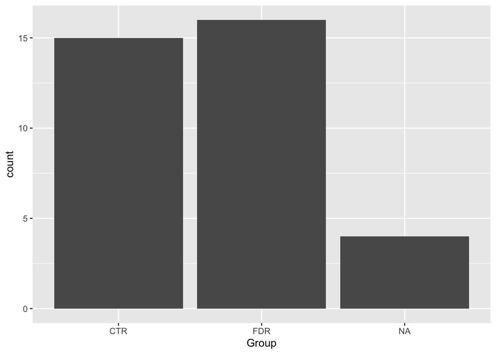
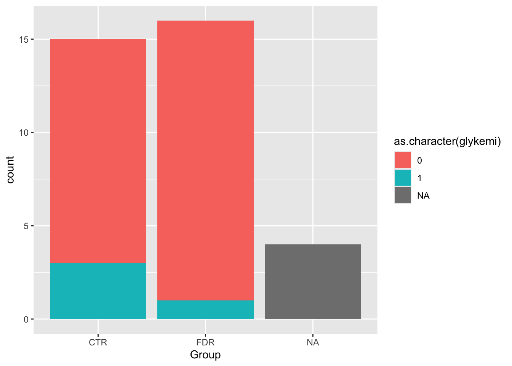
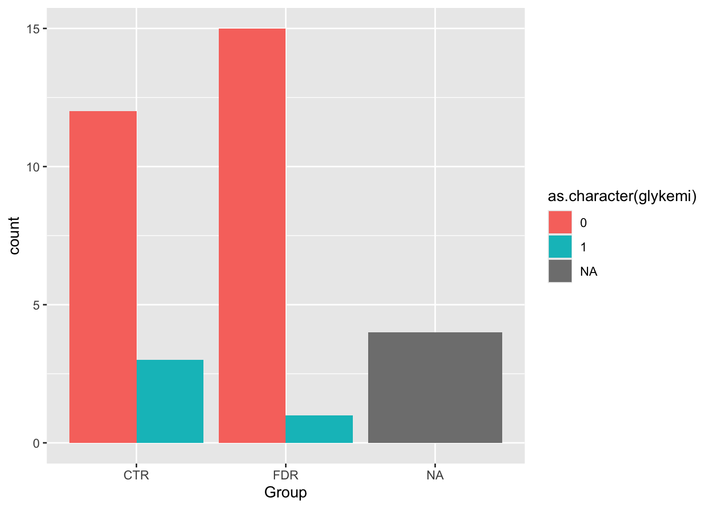
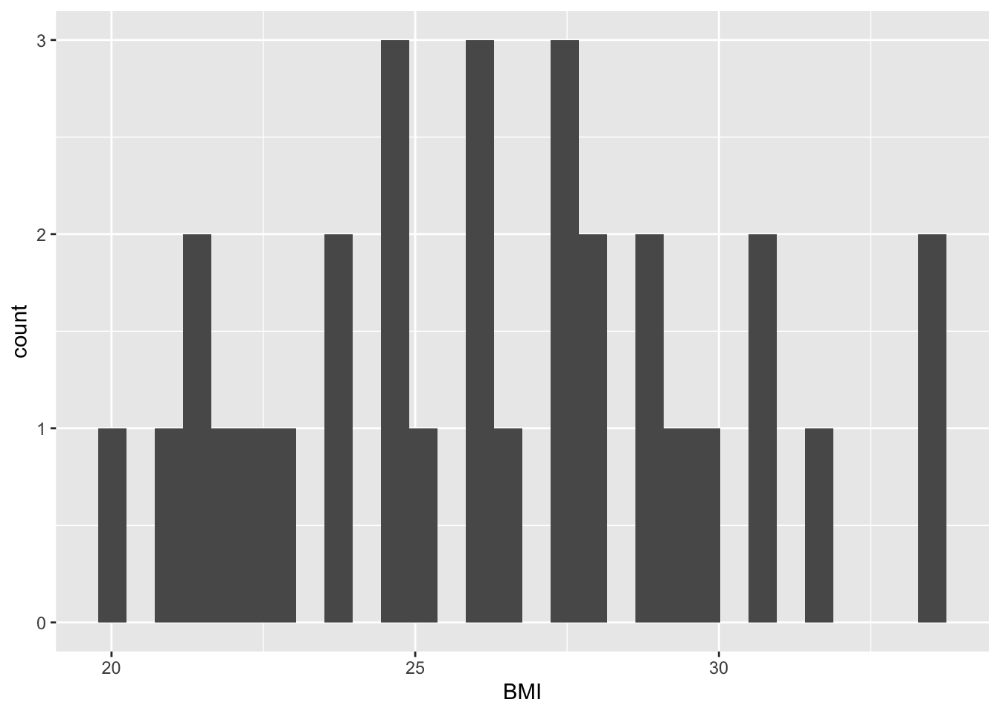

2 + 2[1] 42 + 2[1] 43 * 3[1] 9Solen skinner og himlen er blå
library(tidyverse)
post_meal_data <- read_csv2(here::here("data/post-meal-insulin.csv"))
small_post_meal_data <- select(post_meal_data, id, Age, BMI, Group, auc_pg, auc_ins, glykemi)post_meal_data# A tibble: 35 × 85
OFS.ID Group Age BMI Length Weight Bone.mineral.DXA Fat.mass...DXA
<chr> <chr> <dbl> <dbl> <dbl> <dbl> <dbl> <dbl>
1 OFS 301 FDR 50 27.5 1.83 92 3.54 30.2
2 OFS 302 FDR 51 33.7 1.77 106. 4.05 36.4
3 OFS 304 FDR 43 26.3 1.84 89.1 3.77 24.4
4 OFS 303 FDR 55 25.9 1.8 84 3.14 27.5
5 OFS 305 FDR 53 29.4 1.84 99.4 4.09 31.2
6 OFS 306 FDR 51 23.7 1.8 76.8 3.21 20
7 OFS 307 FDR 48 23.9 1.78 75.8 3.33 15.4
8 OFS 308 FDR 35 22 1.75 67.5 3.26 13.8
9 OFS 309 FDR 54 26.4 1.83 87.9 4.49 20
10 OFS 310 FDR 52 24.5 1.72 72.2 2.87 28.5
# ℹ 25 more rows
# ℹ 77 more variables: Fat.mass.DXA <dbl>, Fat.free.mass.DXA <dbl>,
# Fat.free.soft.tissue.DXA <dbl>, FP.Glucose.screen <dbl>,
# P.Glucose..5.OGTT <dbl>, P.Glucose.0.OGTT <dbl>, P.GLucose.30.OGTT <dbl>,
# P.Glucose.60.OGTT <dbl>, P.Glucose.90.OGTT <dbl>, P.Glucose.120.OGTT <dbl>,
# FS.Insulin.screen <dbl>, Insulin..5.OGTT.X <dbl>, Insulin.0.OGTT.X <dbl>,
# Insulin.0.OGTT <dbl>, Insulin.30.OGTT <dbl>, Insulin.60.OGTT <dbl>, …glimpse(post_meal_data)
ggplot(post_meal_data, aes(x = BMI)) +
geom_histogram()`stat_bin()` using `bins = 30`. Pick better value with `binwidth`.Warning: Removed 4 rows containing non-finite outside the scale range
(`stat_bin()`).
::: {.cell}
```{.r .cell-code}
ggplot(post_meal_data, aes(x = BMI)) +
geom_histogram()`stat_bin()` using `bins = 30`. Pick better value with `binwidth`.Warning: Removed 4 rows containing non-finite outside the scale range
(`stat_bin()`).
:::
ggplot(post_meal_data, aes(x = Group)) +
geom_bar()
See Figure 2 above for a cool plot!
ggplot(post_meal_data, aes(x = Group, fill = glykemi)) +
geom_bar()Warning: The following aesthetics were dropped during statistical transformation: fill.
ℹ This can happen when ggplot fails to infer the correct grouping structure in
the data.
ℹ Did you forget to specify a `group` aesthetic or to convert a numerical
variable into a factor?
ggplot(post_meal_data, aes(x = Group, fill = as.character(glykemi))) +
geom_bar()
ggplot(post_meal_data, aes(x = Group, fill = as.character(glykemi))) +
geom_bar(position = position_dodge())
ggplot(post_meal_data, aes(x = BMI)) +
geom_histogram()`stat_bin()` using `bins = 30`. Pick better value with `binwidth`.Warning: Removed 4 rows containing non-finite outside the scale range
(`stat_bin()`).
ggplot(post_meal_data, aes(x = glykemi)) +
geom_bar()Warning: Removed 4 rows containing non-finite outside the scale range
(`stat_count()`).
ggplot(post_meal_data, aes(x = BMI)) +
geom_histogram()`stat_bin()` using `bins = 30`. Pick better value with `binwidth`.Warning: Removed 4 rows containing non-finite outside the scale range
(`stat_bin()`).ggplot(post_meal_data, aes(x = glykemi)) +
geom_bar()Warning: Removed 4 rows containing non-finite outside the scale range
(`stat_count()`).ggplot(post_meal_data, aes(x = BMI, y = auc_pg)) +
geom_point() +
geom_smooth()`geom_smooth()` using method = 'loess' and formula = 'y ~ x'Warning: Removed 4 rows containing non-finite outside the scale range
(`stat_smooth()`).Warning: Removed 4 rows containing missing values or values outside the scale range
(`geom_point()`).select(post_meal_data, Age)# A tibble: 35 × 1
Age
<dbl>
1 50
2 51
3 43
4 55
5 53
6 51
7 48
8 35
9 54
10 52
# ℹ 25 more rowsselect(post_meal_data, Age, BMI, Weight)# A tibble: 35 × 3
Age BMI Weight
<dbl> <dbl> <dbl>
1 50 27.5 92
2 51 33.7 106.
3 43 26.3 89.1
4 55 25.9 84
5 53 29.4 99.4
6 51 23.7 76.8
7 48 23.9 75.8
8 35 22 67.5
9 54 26.4 87.9
10 52 24.5 72.2
# ℹ 25 more rowsselect(post_meal_data, -Group)# A tibble: 35 × 84
OFS.ID Age BMI Length Weight Bone.mineral.DXA Fat.mass...DXA Fat.mass.DXA
<chr> <dbl> <dbl> <dbl> <dbl> <dbl> <dbl> <dbl>
1 OFS 3… 50 27.5 1.83 92 3.54 30.2 27.9
2 OFS 3… 51 33.7 1.77 106. 4.05 36.4 38.7
3 OFS 3… 43 26.3 1.84 89.1 3.77 24.4 21.9
4 OFS 3… 55 25.9 1.8 84 3.14 27.5 23.2
5 OFS 3… 53 29.4 1.84 99.4 4.09 31.2 31.2
6 OFS 3… 51 23.7 1.8 76.8 3.21 20 15.3
7 OFS 3… 48 23.9 1.78 75.8 3.33 15.4 11.8
8 OFS 3… 35 22 1.75 67.5 3.26 13.8 9.4
9 OFS 3… 54 26.4 1.83 87.9 4.49 20 17.9
10 OFS 3… 52 24.5 1.72 72.2 2.87 28.5 20.7
# ℹ 25 more rows
# ℹ 76 more variables: Fat.free.mass.DXA <dbl>, Fat.free.soft.tissue.DXA <dbl>,
# FP.Glucose.screen <dbl>, P.Glucose..5.OGTT <dbl>, P.Glucose.0.OGTT <dbl>,
# P.GLucose.30.OGTT <dbl>, P.Glucose.60.OGTT <dbl>, P.Glucose.90.OGTT <dbl>,
# P.Glucose.120.OGTT <dbl>, FS.Insulin.screen <dbl>, Insulin..5.OGTT.X <dbl>,
# Insulin.0.OGTT.X <dbl>, Insulin.0.OGTT <dbl>, Insulin.30.OGTT <dbl>,
# Insulin.60.OGTT <dbl>, Insulin.90.OGTT <dbl>, Insulin.120.OGTT <dbl>, …select(post_meal_data, starts_with("PG"))# A tibble: 35 × 15
PG.15 PG.5 PG1 PG2 PG3 PG5 PG8 PG10 PG15 PG20 PG30 PG45 PG60
<dbl> <dbl> <dbl> <dbl> <dbl> <dbl> <dbl> <dbl> <dbl> <dbl> <dbl> <dbl> <dbl>
1 5.4 5.4 5.4 5.5 5.3 5.3 5.5 5.5 5.8 6.1 6.9 7.6 6.5
2 5.2 5.4 5.4 5.4 5.4 5.4 5.5 5.6 6 6.5 7.5 7.8 7.5
3 4.9 5 5.1 5.1 5.1 5 5.1 5.1 5 5.2 5.5 5.8 5.6
4 4.8 4.8 4.8 4.8 4.7 4.9 4.9 5.1 5.3 5.1 5.5 6.2 6.7
5 5.9 5.8 5.8 5.9 5.8 5.8 5.7 5.7 6.2 7.2 8 9.3 9.1
6 5 4.9 5.1 5.1 5.1 5 5 5 5.5 5.6 6.1 6.4 5.9
7 5 5.1 5 5 5.1 5.1 5.1 5.2 5.7 6.1 7.9 9.8 9.4
8 4.6 4.6 4.9 4.9 4.9 4.8 4.7 4.8 5.1 5.5 6.5 7.3 6.2
9 5.3 5.1 5.2 5.3 5.4 5.2 5.2 5.4 6 6.4 7.1 7.2 6.8
10 4.9 4.9 4.8 4.8 4.8 4.9 5.1 5 5.3 6 6.5 6.7 6.8
# ℹ 25 more rows
# ℹ 2 more variables: PG90 <dbl>, PG120 <dbl>select(post_meal_data, ends_with("DXA"))# A tibble: 35 × 5
Bone.mineral.DXA Fat.mass...DXA Fat.mass.DXA Fat.free.mass.DXA
<dbl> <dbl> <dbl> <dbl>
1 3.54 30.2 27.9 64.3
2 4.05 36.4 38.7 67.8
3 3.77 24.4 21.9 68.0
4 3.14 27.5 23.2 61.1
5 4.09 31.2 31.2 69.0
6 3.21 20 15.3 60.9
7 3.33 15.4 11.8 64.9
8 3.26 13.8 9.4 59.0
9 4.49 20 17.9 71.3
10 2.87 28.5 20.7 51.8
# ℹ 25 more rows
# ℹ 1 more variable: Fat.free.soft.tissue.DXA <dbl># All columns containing the number "0"
select(post_meal_data, contains("0"))# A tibble: 35 × 29
P.Glucose.0.OGTT P.GLucose.30.OGTT P.Glucose.60.OGTT P.Glucose.90.OGTT
<dbl> <dbl> <dbl> <dbl>
1 5.1 9.4 6.9 4.7
2 5.4 8.4 8.4 8.7
3 4.9 6.8 4.3 3.8
4 5.15 8.8 8.4 7.5
5 5.55 9.9 10.6 11
6 5.6 8.9 9.1 7.1
7 5 7.6 6.3 5.3
8 5.15 6.4 7.6 6.3
9 4.9 7.4 6.8 5.5
10 5.3 8.7 10.1 6.8
# ℹ 25 more rows
# ℹ 25 more variables: P.Glucose.120.OGTT <dbl>, Insulin.0.OGTT.X <dbl>,
# Insulin.0.OGTT <dbl>, Insulin.30.OGTT <dbl>, Insulin.60.OGTT <dbl>,
# Insulin.90.OGTT <dbl>, Insulin.120.OGTT <dbl>, PG10 <dbl>, PG20 <dbl>,
# PG30 <dbl>, PG60 <dbl>, PG90 <dbl>, PG120 <dbl>, CP10 <dbl>, CP20 <dbl>,
# CP30 <dbl>, CP60 <dbl>, CP90 <dbl>, CP120 <dbl>, Insulin10 <dbl>,
# Insulin20 <dbl>, Insulin30 <dbl>, Insulin60 <dbl>, Insulin90 <dbl>, …small_post_meal_data <- select(post_meal_data, id, Age, BMI, Group, auc_pg, auc_ins, glykemi)small_post_meal_data |>
rename(auc_glucose = auc_pg)# A tibble: 35 × 7
id Age BMI Group auc_glucose auc_ins glykemi
<dbl> <dbl> <dbl> <chr> <dbl> <dbl> <dbl>
1 1 50 27.5 FDR 806. 28728. 0
2 2 51 33.7 FDR 944. 42243. 0
3 3 43 26.3 FDR 694. 7108. 0
4 4 55 25.9 FDR 731. 37593. 0
5 5 53 29.4 FDR 1004. 33863. 0
6 6 51 23.7 FDR 713. 15008. 0
7 7 48 23.9 FDR 965. 23196. 0
8 8 35 22 FDR 741. 15272. 0
9 9 54 26.4 FDR 848. 24426. 0
10 10 52 24.5 FDR 759. 22475. 0
# ℹ 25 more rowssmall_post_meal_data |>
rename(
auc_glucose = auc_pg,
auc_insulin = auc_ins
)# A tibble: 35 × 7
id Age BMI Group auc_glucose auc_insulin glykemi
<dbl> <dbl> <dbl> <chr> <dbl> <dbl> <dbl>
1 1 50 27.5 FDR 806. 28728. 0
2 2 51 33.7 FDR 944. 42243. 0
3 3 43 26.3 FDR 694. 7108. 0
4 4 55 25.9 FDR 731. 37593. 0
5 5 53 29.4 FDR 1004. 33863. 0
6 6 51 23.7 FDR 713. 15008. 0
7 7 48 23.9 FDR 965. 23196. 0
8 8 35 22 FDR 741. 15272. 0
9 9 54 26.4 FDR 848. 24426. 0
10 10 52 24.5 FDR 759. 22475. 0
# ℹ 25 more rows